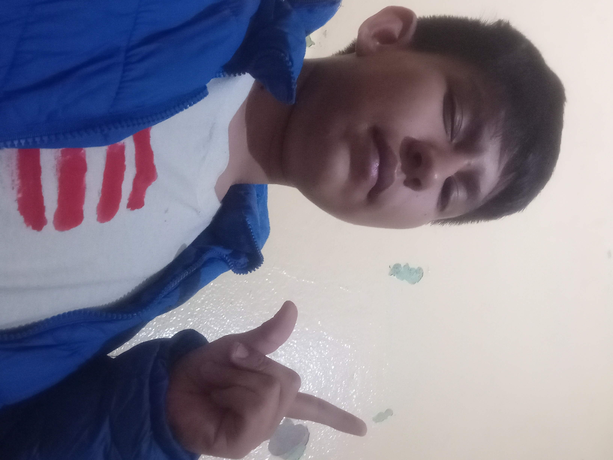

Regresar
DILAN HERNANDEZ ROJEL
26/Junio/2009

Nacio en el año 2009:Crecio en un pueblo llamado "Santa Maria Ajoloapan" Tuvo una infancia relativamente normal, conviviendo con sus familiares y realmente siendo un Niño bastante paciente Pese a todo, durante su kinder y primaria tuvo un mejor amigo que por cuestiones deespacio lo llamaremos G
Aunque actualmente no se haban tato, realmente sigue habiendo una pequeña Amistad
Durante el proceso de la secundaria conocio a su otros dos mejores amigos L (Logan) y M (Melissa) y finalmente teniedo amigos con los que confiar al 100%... Conforme fue creciendo su mentalidad se fue moldeando, mostrando un faceta donde descubrio su forma Paciente Demostrando solo un poco de madurez... Realmente muy poca
Despues de la secundaria estuvo en un dilema dicifil (Si lo leiste bien) Donde tenia que escojer si ir con sus amigos o ir por un sueño que no sabria que cumpliria, finalmente tomano una desicion y decidio cumplir su sueño, ser programador, asi fue al Examen, nervioso porque realmente solo tenia UNA opcion de escuela, el CECyTEM, si no ingresaba se quedaria sin escuela, pero finalmente se armo de Valentia Y finalmente despues de esperar los resultados finamente ingreso a su escuela